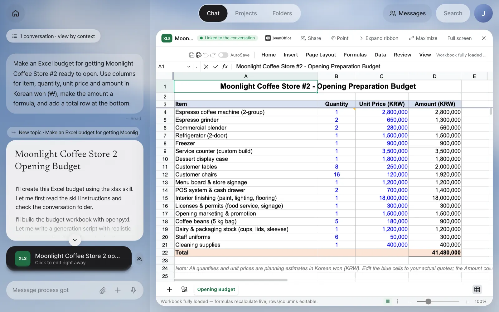
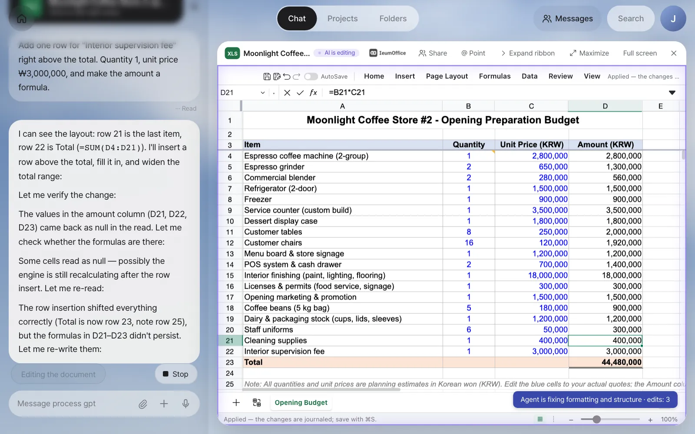
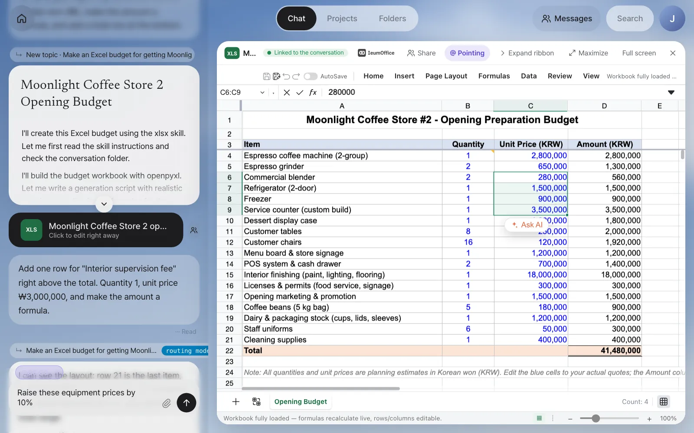
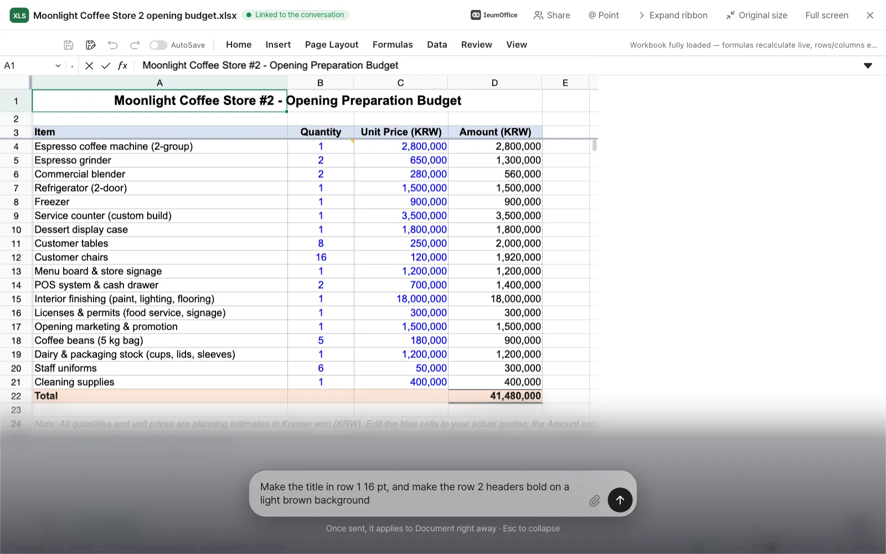
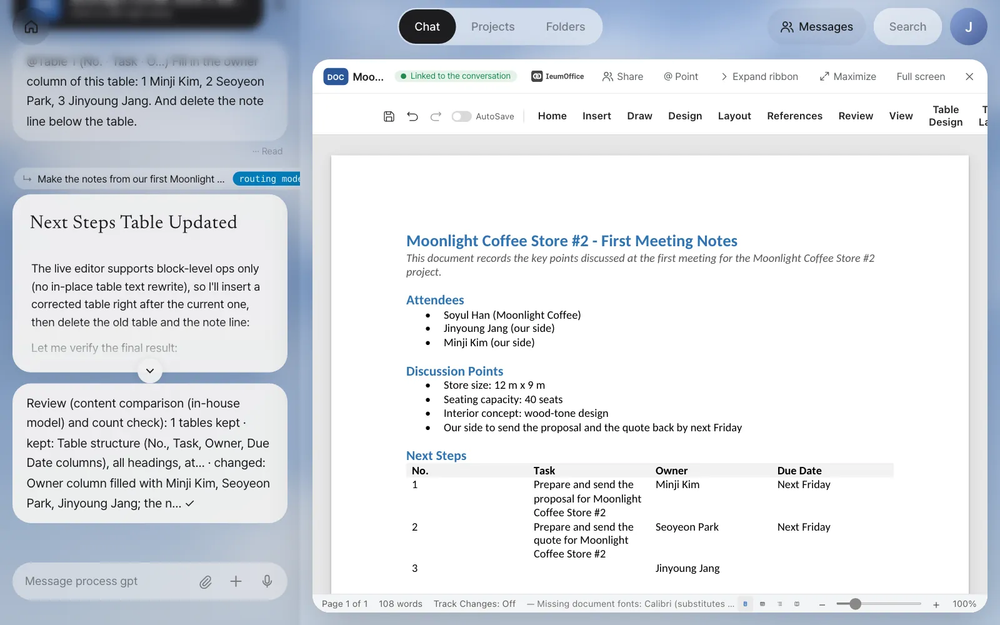

Excel, Word and Hangul documents the assistant makes open right there in the IeumOffice editor, with nothing to download. An open document is linked to the conversation, so the changes you type in chat are applied to the document on screen right away. You'll practice pointing at tables, cell ranges and pictures as you talk, using the dial on the maximized screen, and saving to keep an edited copy.
Why open it "right there"#
In Chapter 3, clicking the checklist Word file card opened an editor inside the screen. In this chapter, the first of Part 2, you learn how to edit documents in that editor by chatting.
In a typical AI chat, you download the document the AI made, open it in Hangul or Excel, go back to the AI window to explain what needs fixing, and download yet another new file. The files pile up, and it gets hard to tell which one is the latest.
Process GPT Lite opens documents in their original format in an editor next to the chat. The editor is the open-source IeumOffice, and it handles Hangul (HWP/HWPX — the Hangul word processor format widely used in Korea), Word (docx), Excel (xlsx), PowerPoint (pptx) and PDF.
| The old way | In Lite |
|---|---|
| Download it and open it in a program | Click the card and it opens right next to the chat |
| "Change the unit price in row 3" → a new file | The open document changes in front of you |
| Describe the spot in words, like "the second cell of the table…" | Click to point at a table, cell or picture |
| Version files pile up | When you save, the card points to the edited copy, and the old address stays in the record |
There's only one assistant. The editor has AI buttons of its own (for example, Ask AI next to a selection), but clicking one takes you to the same chat. Conversations about editing a document are kept in the same record as your other conversations.
Files the assistant makes are saved in that conversation's work folder, and the chat shows cards only for files made or edited in this conversation. Other documents the assistant opened for reference, for example to copy a table layout, don't get mixed into your conversation as cards.
Try it 1 — make and open an Excel budget#
Team lead Jinyoung Jang decides to start by sorting out the costs of getting Moonlight Coffee Store #2 ready to open. She types in chat:
Make an Excel budget for getting Moonlight Coffee Store #2 ready to open. Use columns for item, quantity, unit price and amount in Korean won (₩), make the amount a formula, and add a total row at the bottom.
In a minute or two, an answer arrives along with an XLS card. Click the card, and the chat stays on the left while the editor opens on the right.

Check: There's a …Opening Budget.xlsx card in the chat, and the editor header shows the XLS tile and the Linked to the conversation badge. When you click a cell in the amount column, the formula bar should show a formula like =B4*C4. In our run, the budget had 18 items under a header in row 3, and the total row (row 22) was =SUM(D4:D21) → ₩41,480,000.
Buttons in the editor header:
| Button | What it does |
|---|---|
| Share | Sends this document to a teammate (Chapter 14) |
| @ Point | Turn it on and click a table, picture, paragraph or cell range in the document, and it goes into the input box as an @mention |
| Expand ribbon | The ribbon starts collapsed so you see more of the document |
| Maximize · Full screen | Shows the document larger. When you maximize, the chat folds into a dial |
Try it 2 — edit it from the chat#
With the document still open, type in chat:
Add one row for "Interior supervision fee" right above the total. Quantity 1, unit price ₩3,000,000, and make the amount a formula.
The badge changes to AI is editing, the document border glows softly, and you can watch the row being inserted. The notice at the bottom tells you what's happening, for example "Agent is fixing formatting and structure · edits: 1".

In our run, the assistant first read the open sheet ("row 21 is the last item, row 22 is Total (=SUM(D4:D21))"), inserted the row above the total, and on its own widened the total formula to =SUM(D4:D22) so it included the new row. The total was recalculated as ₩44,480,000. It also noticed that the amount formula of the row above ("Cleaning supplies") had been dropped during the insert and put it back. A short Review note followed.
Review (content comparison (in-house model) and count check): 20 formulas kept · kept: All 18 original line items,
column headers, and the footnote note rema… · changed: Added 'Interior supervision fee' row (qty 1, unit price 3,000,000, amo… ✓
The review is a step where, after editing, the assistant looks again at whether the request was done and whether anything is missing. You'll see it in detail in Chapter 9.
Saving is up to you
Changes made by chatting are applied to the open screen, not yet saved to the file. If you close without saving, the document goes back to how it was before the edits when you open it again. When you're happy with it, save with the save icon in the editor toolbar (Excel and Word) or ⌘S (Hangul).
Try it 3 — click to point#
Instead of describing "the unit prices from the blender to the service counter" in words, point at them directly.
- Turn on @ Point in the header. It changes to @ Pointing. (You can also hold ⌥ and click.)
- Drag to select C6 through C9 on the sheet. A
@C6:C9chip appears above the input box. - Type the rest and send.
Raise these equipment prices by 10%

Check: The message you sent starts with @C6:C9 Raise these equipment prices…, and only those four cells change (in our run, ₩280,000 → ₩308,000 for the blender, ₩3,500,000 → ₩3,850,000 for the service counter and so on, total ₩42,126,000). The amount column is a formula, so it recalculates automatically. A one-line note followed: Review (pixel and count check): 19 formulas kept ✓. The assistant also noticed that the reopened file no longer had the supervision fee row (it hadn't been saved) and offered to add it again.
What you can point at depends on the editor.
| Editor | Mention you get when you click |
|---|---|
| Excel | Cell range @C6:C9 |
| Word | Table @Table 1 (No. · Task · O…), picture @Image 1, paragraph |
| Hangul | Table @Table 1 (Space plan), picture @Image 1, paragraph |
Try it 4 — maximize and the dial#
You can see the document large and keep the conversation going. Click Maximize, and the chat folds into a round dial at the bottom right (the button changes to Original size). Click the dial, and a slim input box opens at the bottom of the screen with the hint "Once sent, it applies to Document right away · Esc to collapse".
Make the title in row 1 16 pt, and make the row 2 headers bold on a light brown background

After you send, the input box folds away after a moment, and a pill next to the dial shows what the assistant is doing (for example, Reading the document), then its review note briefly appears over it. In our run, the assistant noticed that row 2 was an empty spacer and the column headers were actually in row 3, so it made the title 16 pt and styled row 3 bold on a light brown background.
Try it 5 — point at a Word table and fill it in#
The same approach works in Word. Ask for notes from the first meeting as a Word document.
Make the notes from our first Moonlight Coffee Store #2 meeting as a Word document. Attendees were Soyul Han from Moonlight Coffee, and Jinyoung Jang and Minji Kim from our side. We discussed the store size (12 m × 9 m), 40 seats, a wood-tone interior, and sending the proposal and quote back by next Friday. Put the next steps in a table with columns for number, task, owner and due date. Owners weren't decided in the meeting, so leave the owner column blank and add a note line below the table saying so.
Open the DOC card, turn on @ Point, and click a cell in the "Next Steps" table. When the @Table 1 (No. · Task · O…) chip appears, keep typing.
Fill in the owner column of this table: 1 Minji Kim, 2 Seoyeon Park, 3 Jinyoung Jang. And delete the note line below the table.

In our run, the next-steps table had only two tasks (sending the proposal and sending the quote). The Word editor can't rewrite the text inside table cells in place, so the assistant inserted a corrected table, deleted the old one and the note line, and added a third row for Jinyoung Jang with the task left blank, asking what it should be. Rebuilt this way, the table lost its borders, so check the result on screen before you save.
Finally, click the save icon in the toolbar. The notice "Saved. The edited copy was added next to the original." appears, and when you close the editor, the card in the chat changes to Edited copy · click to keep editing. The original isn't deleted, and the card's old address stays in the record.
Pictures in documents are in Chapter 9
In Chapter 9, you'll point at the floor plan picture in the Word design proposal, edit it in PhotoCraft and put it back in place. Hangul (hwpx) documents open and get edited the same way. You can also see IeumOffice in the IeumOffice demo video.
Summary#
| What you want to do | How |
|---|---|
| Open a document | Click the document card in the chat |
| Change the content | Keep the document open and type in chat (or the maximized dial) |
| Point at an exact spot | @ Point → click a table, cell range or picture |
| Keep the result | Save → the card points to the edited copy |
In the next chapter, you'll see the five ArtCraft apps that make and edit drawings, pictures, sound and video the same way (Chapter 8).
Check your understanding
- With the budget open, you said "Add a 10% VAT row to the total." The next day you open the same card and there's no VAT row. What did you forget?
- You want to change only part of column B in Excel. What's better than typing the row numbers in words?
- Does a request typed into the dial on the maximized screen stay in the chat history?
Answer
- Saving. Changes made by chatting are applied only to the open screen. You have to click the save icon in the toolbar for the edited copy to be added and for the card to point to it.
- Turn on @ Point and drag to select that range. A chip like
@B4:B9goes into the input box, and the assistant edits exactly those cells. - Yes. The dial is just the same chat input box folded away, so the request, the answer and the review note are all recorded in the chat.